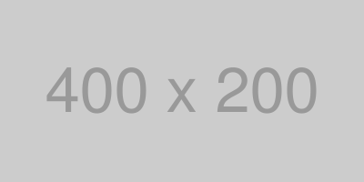
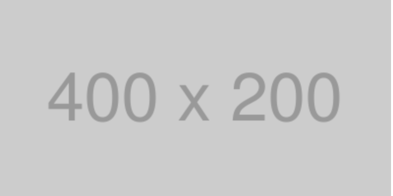

400x400pxの解像度300pxの画像
少しぼやけて表示される

今見ているモニターのpixelRatioは です。
400x200pxで表示され少しぼやける
800x400pxのサイズで生成され、だいぶぼやけて表示される
だいぶぼやけが解消される
ぼやけが解消される
少しぼやけて表示される
ぼやけが解消される
image要素に対しては上記のような処置をし、背景画像に対してはbackground-sizeを用いる。
background-size: 200px 100px;
@media screen and (min-resolution: 2dppx) { /* ... */ }
@media screen and (resolution >= 2dppx) { /* ... */ }